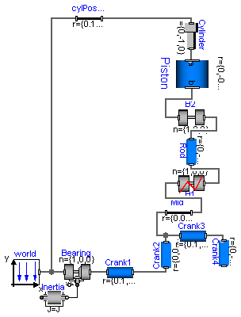
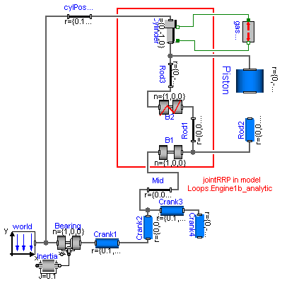
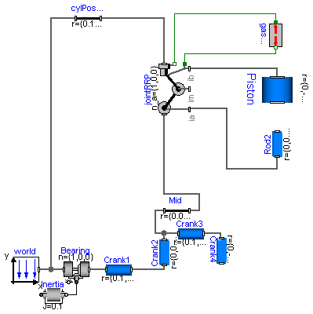
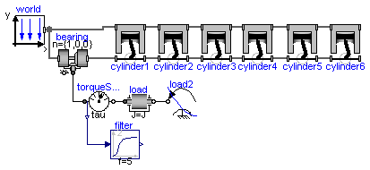
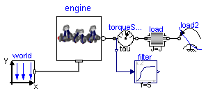
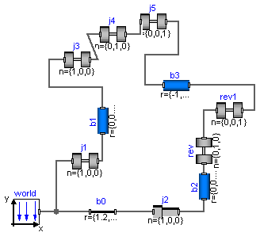
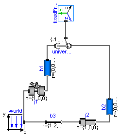
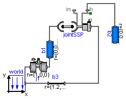
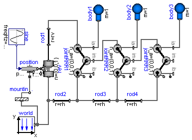

Engine1b
Engine1b_analytic

EngineV6_analytic


This package contains different examples to show how mechanical systems with kinematic loops can be modeled.
| Model | Description |
|---|---|
| Engine1a Engine1b Engine1b_analytic |
Model of one cylinder engine (Engine1a: simple, without combustion; Engine1b: with combustion;
Engine1b_analytic: same as Engine1b but analytic loop handling)
|
| EngineV6 EngineV6_analytic |
V6 engine with 6 cylinders, 6 planar loops and 1 degree-of-freedom.
Second version with analytic handling of kinematic loops and CAD data
animation.
|
| Fourbar1 | One kinematic loop with four bars (with only revolute joints;
5 non-linear equations)
|
| Fourbar2 | One kinematic loop with four bars (with UniversalSpherical
joint; 1 non-linear equation)
|
| Fourbar_analytic | One kinematic loop with four bars (with JointSSP joint;
analytic solution of non-linear algebraic loop)
|
| PlanarLoops_analytic | Mechanism with three planar kinematic loops and one
degree-of-freedom with analytic loop handling
(with JointRRR joints)
|
| Name | Description |
|---|---|
| Model of one cylinder engine | |
| Model of one cylinder engine with gas force and preparation for assembly joint JointRRP | |
| Model of one cylinder engine with gas force and analytic loop handling | |
| V6 engine with 6 cylinders, 6 planar loops and 1 degree-of-freedom | |
| V6 engine with 6 cylinders, 6 planar loops, 1 degree-of-freedom and analytic handling of kinematic loops | |
| One kinematic loop with four bars (with only revolute joints; 5 non-linear equations) | |
| One kinematic loop with four bars (with UniversalSpherical joint; 1 non-linear equation) | |
| One kinematic loop with four bars (with JointSSP joint; analytic solution of non-linear algebraic loop) | |
| Mechanism with three planar kinematic loops and one degree-of-freedom with analytic loop handling (with JointRRR joints) | |
| Utility models for Examples.Loops |
 Modelica.Mechanics.MultiBody.Examples.Loops.Engine1a
Modelica.Mechanics.MultiBody.Examples.Loops.Engine1a
This is a model of the mechanical part of one cylinder of an engine. The combustion is not modelled. The "inertia" component at the lower left part is the output inertia of the engine driving the gearbox. The angular velocity of the output inertia has a start value of 10 rad/s in order to demonstrate the movement of the engine.
The engine is modeled solely by revolute and prismatic joints. Since this results in a planar loop there is the well known difficulty that the cut-forces perpendicular to the loop cannot be uniquely computed, as well as the cut-torques within the plane. This ambiguity is resolved by using the option planarCutJoint in the Advanced menu of one revolute joint in every planar loop (here: joint B1). This option sets the cut-force in direction of the axis of rotation, as well as the cut-torques perpendicular to the axis of rotation at this joint to zero and makes the problem mathematically well-formed.
An animation of this example is shown in the figure below.
model Engine1a "Model of one cylinder engine"
import SI = Modelica.SIunits;
extends Modelica.Icons.Example;
Modelica.Mechanics.MultiBody.Parts.BodyCylinder Piston(diameter=0.1, r={0,-0.1,0});
Modelica.Mechanics.MultiBody.Parts.BodyBox Rod(
widthDirection={1,0,0},
width=0.02,
height=0.06,
r={0,-0.2,0},
color={0,0,200});
Modelica.Mechanics.MultiBody.Joints.Revolute B2(
n={1,0,0},
cylinderLength=0.02,
cylinderDiameter=0.05);
Modelica.Mechanics.MultiBody.Joints.Revolute Bearing(useAxisFlange=true,
n={1,0,0},
cylinderLength=0.02,
cylinderDiameter=0.05);
inner Modelica.Mechanics.MultiBody.World world;
Modelica.Mechanics.Rotational.Components.Inertia Inertia(
stateSelect=StateSelect.always,
phi(fixed=true, start=0),
w(fixed=true, start=10));
Modelica.Mechanics.MultiBody.Parts.BodyBox Crank4(
height=0.05,
widthDirection={1,0,0},
width=0.02,
r={0,-0.1,0});
Modelica.Mechanics.MultiBody.Parts.BodyCylinder Crank3(r={0.1,0,0}, diameter=0.03);
Modelica.Mechanics.MultiBody.Parts.BodyCylinder Crank1(diameter=0.05, r={0.1,0,0});
Modelica.Mechanics.MultiBody.Parts.BodyBox Crank2(
r={0,0.1,0},
height=0.05,
widthDirection={1,0,0},
width=0.02);
Joints.RevolutePlanarLoopConstraint B1(
n={1,0,0},
cylinderLength=0.02,
cylinderDiameter=0.05);
Modelica.Mechanics.MultiBody.Parts.FixedTranslation Mid(r={0.05,0,0});
Modelica.Mechanics.MultiBody.Joints.Prismatic Cylinder(
boxWidth=0.02,
n={0,-1,0},
s(start=0.15));
Modelica.Mechanics.MultiBody.Parts.FixedTranslation cylPosition( animation=false, r={0.15,
0.45,0});
equation
connect(world.frame_b, Bearing.frame_a);
connect(Crank2.frame_a, Crank1.frame_b);
connect(Crank2.frame_b, Crank3.frame_a);
connect(Bearing.frame_b, Crank1.frame_a);
connect(cylPosition.frame_b, Cylinder.frame_a);
connect(world.frame_b, cylPosition.frame_a);
connect(Crank3.frame_b, Crank4.frame_a);
connect(B1.frame_a, Mid.frame_b);
connect(B1.frame_b, Rod.frame_b);
connect(Rod.frame_a, B2.frame_b);
connect(B2.frame_a, Piston.frame_b);
connect(Inertia.flange_b, Bearing.axis);
connect(Mid.frame_a, Crank2.frame_b);
connect(Cylinder.frame_b, Piston.frame_a);
end Engine1a;
Modelica.Mechanics.MultiBody.Examples.Loops.Engine1b
This is a model of the mechanical part of one cylinder of an engine. It is similiar to Loops.Engine1a. The difference is that a simple model for the gas force in the cylinder is added and that the model is restructured in such a way, that the central part of the planar kinematic loop can be easily replaced by the assembly joint "Modelica.Mechanics.MultiBody.Joints.Assemblies.JointRRP". This exchange of the kinematic loop is shown in Loops.Engine1b_analytic. The advantage of using JointRRP is, that the non-linear algebraic equation of this loop is solved analytically, and not numerically as in this model (Engine1b).
An animation of this example is shown in the figure below.
model Engine1b
"Model of one cylinder engine with gas force and preparation for assembly joint JointRRP"
import SI = Modelica.SIunits;
extends Modelica.Icons.Example;
extends Utilities.Engine1bBase;
Joints.RevolutePlanarLoopConstraint B2(
n={1,0,0},
cylinderLength=0.02,
cylinderDiameter=0.05);
Modelica.Mechanics.MultiBody.Joints.Revolute B1(
n={1,0,0},
cylinderLength=0.02,
cylinderDiameter=0.05);
Modelica.Mechanics.MultiBody.Joints.Prismatic Cylinder(useAxisFlange=true,
boxWidth=0.02, n={0,-1,0});
Parts.FixedTranslation Rod1(r={0,0.2,0}, animation=false);
Parts.FixedTranslation Rod3(r={0,-0.1,0}, animation=false);
equation
connect(B1.frame_b, Rod1.frame_a);
connect(Rod1.frame_b, B2.frame_b);
connect(Cylinder.frame_b, Rod3.frame_a);
connect(B2.frame_a, Rod3.frame_b);
connect(cylPosition.frame_b, Cylinder.frame_a);
connect(gasForce.flange_a, Cylinder.support);
connect(Cylinder.axis, gasForce.flange_b);
connect(Piston.frame_a, Rod3.frame_a);
connect(B1.frame_b, Rod2.frame_a);
connect(Mid.frame_b, B1.frame_a);
end Engine1b;
Modelica.Mechanics.MultiBody.Examples.Loops.Engine1b_analytic
This is the same model as Loops.Engine1b. The only difference is that the central part of the planar kinematic loop has been replaced by the assembly joint "Modelica.Mechanics.MultiBody.Joints.Assemblies.JointRRP". The advantage of using JointRRP is, that the non-linear algebraic equation of this loop is solved analytically, and not numerically as in Loops.Engine1b.
An animation of this example is shown in the figure below.
model Engine1b_analytic
"Model of one cylinder engine with gas force and analytic loop handling"
import SI = Modelica.SIunits;
extends Modelica.Icons.Example;
extends Utilities.Engine1bBase;
Joints.Assemblies.JointRRP jointRRP(
n_a={1,0,0},
n_b={0,-1,0},
animation=false,
rRod1_ia={0,0.2,0},
rRod2_ib={0,-0.1,0});
equation
connect(Mid.frame_b, jointRRP.frame_a);
connect(jointRRP.frame_b, cylPosition.frame_b);
connect(jointRRP.axis, gasForce.flange_b);
connect(jointRRP.bearing, gasForce.flange_a);
connect(jointRRP.frame_ib, Piston.frame_a);
connect(jointRRP.frame_ia, Rod2.frame_a);
end Engine1b_analytic;
Modelica.Mechanics.MultiBody.Examples.Loops.EngineV6
This is a V6 engine with 6 cylinders. It is hierarchically built up by using instances of one cylinder. For more details on the modeling of one cylinder, see example Engine1b. An animation of the engine is shown in the figure below.

Simulate for 5 s, and plot the variables engineSpeed_rpm, engineTorque, and filteredEngineTorque. Note, the result file has a size of about 50 Mbyte (for 5000 output intervalls).
| Type | Name | Default | Description |
|---|---|---|---|
| Boolean | animation | true | = true, if animation shall be enabled |
model EngineV6
"V6 engine with 6 cylinders, 6 planar loops and 1 degree-of-freedom"
import Cv = Modelica.SIunits.Conversions;
extends Modelica.Icons.Example;
parameter Boolean animation=true "= true, if animation shall be enabled";
output Modelica.SIunits.Conversions.NonSIunits.AngularVelocity_rpm
engineSpeed_rpm=
Modelica.SIunits.Conversions.to_rpm(load.w) "Engine speed";
output Modelica.SIunits.Torque engineTorque = filter.u
"Torque generated by engine";
output Modelica.SIunits.Torque filteredEngineTorque = filter.y
"Filtered torque generated by engine";
Modelica.Mechanics.MultiBody.Joints.Revolute bearing(useAxisFlange=true,
n={1,0,0},
cylinderLength=0.02,
cylinderDiameter=0.06,
animation=animation);
inner Modelica.Mechanics.MultiBody.World world(animateWorld=false,
animateGravity = false);
Utilities.Cylinder cylinder1(
crankAngleOffset=Cv.from_deg(-30),
cylinderInclination=Cv.from_deg(-30),
animation=animation);
Utilities.Cylinder cylinder2(
crankAngleOffset=Cv.from_deg(90),
cylinderInclination=Cv.from_deg(30),
animation=animation);
Utilities.Cylinder cylinder3(
cylinderInclination=Cv.from_deg(-30),
animation=animation,
crankAngleOffset=Cv.from_deg(210));
Utilities.Cylinder cylinder4(
cylinderInclination=Cv.from_deg(30),
animation=animation,
crankAngleOffset=Cv.from_deg(210));
Utilities.Cylinder cylinder5(
cylinderInclination=Cv.from_deg(-30),
animation=animation,
crankAngleOffset=Cv.from_deg(90));
Utilities.Cylinder cylinder6(
cylinderInclination=Cv.from_deg(30),
animation=animation,
crankAngleOffset=Cv.from_deg(-30));
Modelica.Mechanics.Rotational.Components.Inertia load(
phi(
start=0,
fixed=true), w(
start=10,
fixed=true),
stateSelect=StateSelect.always);
Modelica.Mechanics.Rotational.Sources.QuadraticSpeedDependentTorque load2(
tau_nominal=-100, w_nominal=
200,
useSupport=false);
Rotational.Sensors.TorqueSensor torqueSensor;
Blocks.Continuous.CriticalDamping filter(
n=2,
initType=Modelica.Blocks.Types.Init.SteadyState,
f=5);
equation
connect(bearing.frame_b, cylinder1.crank_a);
connect(cylinder1.crank_b, cylinder2.crank_a);
connect(cylinder2.crank_b, cylinder3.crank_a);
connect(cylinder3.crank_b, cylinder4.crank_a);
connect(cylinder4.crank_b, cylinder5.crank_a);
connect(cylinder5.crank_b, cylinder6.crank_a);
connect(cylinder5.cylinder_b, cylinder6.cylinder_a);
connect(cylinder4.cylinder_b, cylinder5.cylinder_a);
connect(cylinder4.cylinder_a, cylinder3.cylinder_b);
connect(cylinder3.cylinder_a, cylinder2.cylinder_b);
connect(cylinder2.cylinder_a, cylinder1.cylinder_b);
connect(world.frame_b, cylinder1.cylinder_a);
connect(world.frame_b, bearing.frame_a);
connect(load2.flange, load.flange_b);
connect(torqueSensor.flange_b, load.flange_a);
connect(torqueSensor.tau,filter. u);
connect(torqueSensor.flange_a, bearing.axis);
end EngineV6;
Modelica.Mechanics.MultiBody.Examples.Loops.EngineV6_analytic
This is a similar model as the example "EngineV6". However, the cylinders have been built up with component Modelica.Mechanics.MultiBody.Joints.Assemblies.JointRRR that solves the non-linear system of equations in an aggregation of 3 revolution joints analytically and only one body is used that holds the total mass of the crank shaft:

This model is about 20 times faster as the EngineV6 example and no linear or non-linear system of equations occur. In contrast, the "EngineV6" example leads to 6 systems of nonlinear equations (every system has dimension = 5, with Evaluate=false and dimension=1 with Evaluate=true) and a linear system of equations of about 40. This shows the power of the analytic loop handling.
Simulate for 5 s, and plot the variables engineSpeed_rpm, engineTorque, and filteredEngineTorque. Note, the result file has a size of about 50 Mbyte (for 5000 output intervalls).
| Type | Name | Default | Description |
|---|---|---|---|
| Boolean | animation | true | = true, if animation shall be enabled |
model EngineV6_analytic
"V6 engine with 6 cylinders, 6 planar loops, 1 degree-of-freedom and analytic handling of kinematic loops"
import Cv = Modelica.SIunits.Conversions;
import SI = Modelica.SIunits;
extends Modelica.Icons.Example;
parameter Boolean animation=true "= true, if animation shall be enabled";
output Modelica.SIunits.Conversions.NonSIunits.AngularVelocity_rpm
engineSpeed_rpm=
Modelica.SIunits.Conversions.to_rpm(load.w) "Engine speed";
output Modelica.SIunits.Torque engineTorque = filter.u
"Torque generated by engine";
output Modelica.SIunits.Torque filteredEngineTorque = filter.y
"Filtered torque generated by engine";
inner Modelica.Mechanics.MultiBody.World world(animateWorld=false,
animateGravity = false);
Utilities.EngineV6_analytic engine(redeclare model Cylinder =
Modelica.Mechanics.MultiBody.Examples.Loops.Utilities.Cylinder_analytic_CAD);
Modelica.Mechanics.Rotational.Components.Inertia load(
phi(
start=0,
fixed=true), w(
start=10,
fixed=true),
stateSelect=StateSelect.always);
Modelica.Mechanics.Rotational.Sources.QuadraticSpeedDependentTorque load2(
tau_nominal=-100, w_nominal=
200,
useSupport=false);
Rotational.Sensors.TorqueSensor torqueSensor;
Blocks.Continuous.CriticalDamping filter(
n=2,
initType=Modelica.Blocks.Types.Init.SteadyState,
f=5);
equation
connect(world.frame_b, engine.frame_a);
connect(load2.flange, load.flange_b);
connect(torqueSensor.flange_a, engine.flange_b);
connect(torqueSensor.flange_b, load.flange_a);
connect(torqueSensor.tau, filter.u);
end EngineV6_analytic;
Modelica.Mechanics.MultiBody.Examples.Loops.Fourbar1
This is a simple kinematic loop consisting of 6 revolute joints, 1 prismatic joint and 4 bars that is often used as basic constructing unit in mechanisms. This example demonstrates that usually no particular knowledge of the user is needed to handle kinematic loops. Just connect the joints and bodies together according to the real system. In particular no cut-joints or a spanning tree has to be determined. In this case, the initial condition of the angular velocity of revolute joint j1 is set to 300 deg/s in order to drive this loop.

model Fourbar1
"One kinematic loop with four bars (with only revolute joints; 5 non-linear equations)"
import SI = Modelica.SIunits;
extends Modelica.Icons.Example;
output SI.Angle j1_phi "angle of revolute joint j1";
output SI.Position j2_s "distance of prismatic joint j2";
output SI.AngularVelocity j1_w "axis speed of revolute joint j1";
output SI.Velocity j2_v "axis velocity of prismatic joint j2";
inner Modelica.Mechanics.MultiBody.World world;
Modelica.Mechanics.MultiBody.Joints.Revolute j1(
n={1,0,0},
stateSelect=StateSelect.always,
phi(fixed=true),
w(displayUnit="deg/s",
start=5.235987755982989,
fixed=true));
Modelica.Mechanics.MultiBody.Joints.Prismatic j2(
n={1,0,0},
s(start=-0.2),
boxWidth=0.05);
Modelica.Mechanics.MultiBody.Parts.BodyCylinder b1(r={0,0.5,0.1}, diameter=0.05);
Modelica.Mechanics.MultiBody.Parts.BodyCylinder b2(r={0,0.2,0}, diameter=0.05);
Modelica.Mechanics.MultiBody.Parts.BodyCylinder b3(r={-1,0.3,0.1}, diameter=0.05);
Modelica.Mechanics.MultiBody.Joints.Revolute rev(n={0,1,0});
Modelica.Mechanics.MultiBody.Joints.Revolute rev1;
Modelica.Mechanics.MultiBody.Joints.Revolute j3(n={1,0,0});
Modelica.Mechanics.MultiBody.Joints.Revolute j4(n={0,1,0});
Modelica.Mechanics.MultiBody.Joints.Revolute j5(n={0,0,1});
Modelica.Mechanics.MultiBody.Parts.FixedTranslation b0(animation=false, r={1.2,0,0});
equation
connect(j2.frame_b, b2.frame_a);
connect(j1.frame_b, b1.frame_a);
connect(rev.frame_a, b2.frame_b);
connect(rev.frame_b, rev1.frame_a);
connect(rev1.frame_b, b3.frame_a);
connect(world.frame_b, j1.frame_a);
connect(b1.frame_b, j3.frame_a);
connect(j3.frame_b, j4.frame_a);
connect(j4.frame_b, j5.frame_a);
connect(j5.frame_b, b3.frame_b);
connect(b0.frame_a, world.frame_b);
connect(b0.frame_b, j2.frame_a);
j1_phi = j1.phi;
j2_s = j2.s;
j1_w = j1.w;
j2_v = j2.v;
end Fourbar1;
Modelica.Mechanics.MultiBody.Examples.Loops.Fourbar2
This is a second version of the "four-bar" mechanism, see figure:

In this case the three revolute joints on the left top-side and the two revolute joints on the right top side have been replaced by the joint UniversalSpherical that is a rod connecting a spherical and a universal joint. This joint is defined by 1 constraint stating that the distance between the two spherical joints is constant. Using this joint in a kinematic loop reduces the sizes of non-linear algebraic equations. For this loop, only one non-linear algebraic system of equations of order 1 remains.
At the UniversalSpherical joint an additional frame_ia fixed to the rod is present where components can be attached to the connecting rod. In this example just a coordinate system is attached to visualize frame_ia (coordinate system on the right in blue color).
Another feature is that the length of the connecting rod can be automatically calculated during initialization. In order to do this, another initialization condition has to be given. In this example, the initial value of the distance of the prismatic joint j2 has been fixed (via the "Initialization" menu) and the rod length of joint "UniversalSpherical" is computed during initialization since parameter computeLength = true is set in the joint parameter menu. The main advantage is that during initialization no non-linear system of equation is solved and therefore initialization always works. To be precise, the following trivial non-linear equation is actually solved for rodLength:
rodLength*rodLength = f(angle of revolute joint, distance of prismatic joint)
model Fourbar2
"One kinematic loop with four bars (with UniversalSpherical joint; 1 non-linear equation)"
import SI = Modelica.SIunits;
extends Modelica.Icons.Example;
output SI.Angle j1_phi "angle of revolute joint j1";
output SI.Position j2_s "distance of prismatic joint j2";
output SI.AngularVelocity j1_w "axis speed of revolute joint j1";
output SI.Velocity j2_v "axis velocity of prismatic joint j2";
inner Modelica.Mechanics.MultiBody.World world;
Modelica.Mechanics.MultiBody.Joints.Revolute j1(useAxisFlange=true,
n={1,0,0},
stateSelect=StateSelect.always,
phi(fixed=true),
w(displayUnit="deg/s",
start=5.235987755982989,
fixed=true));
Modelica.Mechanics.MultiBody.Joints.Prismatic j2(
n={1,0,0},
boxWidth=0.05,
s(fixed=true, start=-0.2));
Modelica.Mechanics.MultiBody.Parts.BodyCylinder b1(r={0,0.5,0.1}, diameter=0.05);
Modelica.Mechanics.MultiBody.Parts.BodyCylinder b2(r={0,0.2,0}, diameter=0.05);
Modelica.Mechanics.MultiBody.Joints.UniversalSpherical universalSpherical(
n1_a={0,1,0},
computeRodLength=true,
rRod_ia={-1,0.3,0.1});
Modelica.Mechanics.MultiBody.Parts.FixedTranslation b3(r={1.2,0,0}, animation=false);
Modelica.Mechanics.MultiBody.Visualizers.FixedFrame fixedFrame(color_x={0,0,255});
equation
j1_phi = j1.phi;
j2_s = j2.s;
j1_w = j1.w;
j2_v = j2.v;
connect(j2.frame_b, b2.frame_a);
connect(j1.frame_b, b1.frame_a);
connect(j1.frame_a, world.frame_b);
connect(b1.frame_b, universalSpherical.frame_b);
connect(universalSpherical.frame_a, b2.frame_b);
connect(b3.frame_a, world.frame_b);
connect(b3.frame_b, j2.frame_a);
connect(fixedFrame.frame_a, universalSpherical.frame_ia);
end Fourbar2;
Modelica.Mechanics.MultiBody.Examples.Loops.Fourbar_analytic
This is a third version of the "four-bar" mechanism, see figure:

In this case the three revolute joints on the left top-side and the two revolute joints on the right top side have been replaced by the assembly joint Joints.Assemblies.JointSSP which consists of two spherical joints and one prismatic joint. Since JointSSP solves the non-linear constraint equation internally analytically, no non-linear equation appears any more and a Modelica translator, such as Dymola, can transform the system into state space form without solving a system of equations. For more details, see MultiBody.UsersGuide.Tutorial.LoopStructures.AnalyticLoopHandling.
model Fourbar_analytic
"One kinematic loop with four bars (with JointSSP joint; analytic solution of non-linear algebraic loop)"
import SI = Modelica.SIunits;
extends Modelica.Icons.Example;
output SI.Angle j1_phi "angle of revolute joint j1";
output SI.Position j2_s "distance of prismatic joint j2";
output SI.AngularVelocity j1_w "axis speed of revolute joint j1";
output SI.Velocity j2_v "axis velocity of prismatic joint j2";
inner Modelica.Mechanics.MultiBody.World world(animateGravity=false);
Modelica.Mechanics.MultiBody.Joints.Revolute j1(useAxisFlange=true,
n={1,0,0},
stateSelect=StateSelect.always,
phi(fixed=true),
w(displayUnit="deg/s",
start=5.235987755982989,
fixed=true));
Modelica.Mechanics.MultiBody.Parts.BodyCylinder b1(r={0,0.5,0.1}, diameter=0.05);
Modelica.Mechanics.MultiBody.Parts.FixedTranslation b3(r={1.2,0,0}, animation=false);
Modelica.Mechanics.MultiBody.Joints.Assemblies.JointSSP jointSSP(
rod1Length=sqrt({-1,0.3,0.1}*{-1,0.3,0.1}),
n_b={1,0,0},
s_offset=-0.2,
rRod2_ib={0,0.2,0},
rod1Color={0,128,255},
rod2Color={0,128,255},
checkTotalPower=true);
Modelica.Mechanics.MultiBody.Parts.BodyCylinder b2(
r={0,0.2,0},
diameter=0.05,
animation=false);
equation
j1_phi = j1.phi;
j2_s = jointSSP.prismatic.distance;
j1_w = j1.w;
j2_v = der(jointSSP.prismatic.distance);
connect(j1.frame_b, b1.frame_a);
connect(j1.frame_a, world.frame_b);
connect(b3.frame_a, world.frame_b);
connect(b1.frame_b, jointSSP.frame_a);
connect(b3.frame_b, jointSSP.frame_b);
connect(b2.frame_a, jointSSP.frame_ib);
end Fourbar_analytic;
Modelica.Mechanics.MultiBody.Examples.Loops.PlanarLoops_analytic
It is demonstrated how the Modelica.Mechanics.MultiBody.Joints.Assemblies.JointRRR joint can be used to solve the non-linear equations of coupled planar loops analytically. In the mechanism below no non-linear equation occurs any more from the tool view, since these equations are solved analytically in the JointRRR joints. For more details, see MultiBody.UsersGuide.Tutorial.LoopStructures.AnalyticLoopHandling.
In the following figure the parameter vectors of this example are visualized in the animation view.

| Type | Name | Default | Description |
|---|---|---|---|
| Length | rh[3] | {0.5,0,0} | Position vector from 'lower left' revolute to 'lower right' revolute joint for all the 3 loops [m] |
| Length | rv[3] | {0,0.5,0} | Position vector from 'lower left' revolute to 'upper left' revolute joint in the first loop [m] |
| Length | r1b[3] | {0.1,0.5,0} | Position vector from 'lower right' revolute to 'upper right' revolute joint in the first loop [m] |
| Length | r2b[3] | {0.1,0.6,0} | Position vector from 'lower right' revolute to 'upper right' revolute joint in the second loop [m] |
| Length | r3b[3] | {0,0.55,0} | Position vector from 'lower right' revolute to 'upper right' revolute joint in the third loop [m] |
model PlanarLoops_analytic
"Mechanism with three planar kinematic loops and one degree-of-freedom with analytic loop handling (with JointRRR joints)"
import SI = Modelica.SIunits;
extends Modelica.Icons.Example;
parameter SI.Length rh[3]={0.5,0,0}
"Position vector from 'lower left' revolute to 'lower right' revolute joint for all the 3 loops";
parameter SI.Length rv[3]={0,0.5,0}
"Position vector from 'lower left' revolute to 'upper left' revolute joint in the first loop";
parameter SI.Length r1b[3]={0.1,0.5,0}
"Position vector from 'lower right' revolute to 'upper right' revolute joint in the first loop";
final parameter SI.Length r1a[3]=r1b + rh - rv
"Position vector from 'upper left' revolute to 'upper right' revolute joint in the first loop";
parameter SI.Length r2b[3]={0.1,0.6,0}
"Position vector from 'lower right' revolute to 'upper right' revolute joint in the second loop";
final parameter SI.Length r2a[3]=r2b + rh - r1b
"Position vector from 'upper left' revolute to 'upper right' revolute joint in the second loop";
parameter SI.Length r3b[3]={0,0.55,0}
"Position vector from 'lower right' revolute to 'upper right' revolute joint in the third loop";
final parameter SI.Length r3a[3]=r3b + rh - r2b
"Position vector from 'upper left' revolute to 'upper right' revolute joint in the third loop";
inner Modelica.Mechanics.MultiBody.World world;
Modelica.Mechanics.MultiBody.Joints.Assemblies.JointRRR jointRRR1(
rRod1_ia=r1a,
rRod2_ib=r1b,
checkTotalPower=true);
Modelica.Mechanics.MultiBody.Joints.Revolute rev(useAxisFlange=true,w(fixed=true));
Modelica.Mechanics.MultiBody.Parts.FixedTranslation rod1(r=rv);
Modelica.Mechanics.MultiBody.Parts.FixedTranslation rod2(r=rh);
Modelica.Mechanics.MultiBody.Parts.Body body1(
m=1,
cylinderColor={155,155,155},
r_CM=jointRRR1.rRod1_ia/2);
Modelica.Mechanics.Rotational.Sources.Position position(useSupport=true);
Modelica.Blocks.Sources.Sine sine(amplitude=0.7);
Modelica.Mechanics.MultiBody.Joints.Assemblies.JointRRR jointRRR2(
rRod1_ia=r2a,
rRod2_ib=r2b,
checkTotalPower=true);
Modelica.Mechanics.MultiBody.Parts.FixedTranslation rod3(r=rh);
Modelica.Mechanics.MultiBody.Parts.Body body2(
m=1,
cylinderColor={155,155,155},
r_CM=jointRRR2.rRod1_ia/2);
Modelica.Mechanics.MultiBody.Joints.Assemblies.JointRRR jointRRR3(
rRod1_ia=r3a,
rRod2_ib=r3b,
checkTotalPower=true);
Modelica.Mechanics.MultiBody.Parts.FixedTranslation rod4(r=rh);
Modelica.Mechanics.MultiBody.Parts.Body body3(
m=1,
cylinderColor={155,155,155},
r_CM=jointRRR3.rRod1_ia/2);
Parts.Mounting1D mounting1D;
equation
connect(world.frame_b, rev.frame_a);
connect(rod1.frame_a, rev.frame_b);
connect(rod1.frame_b, jointRRR1.frame_a);
connect(rod2.frame_a, world.frame_b);
connect(rod2.frame_b, jointRRR1.frame_b);
connect(jointRRR1.frame_ia, body1.frame_a);
connect(rod3.frame_a, rod2.frame_b);
connect(rod3.frame_b, jointRRR2.frame_b);
connect(jointRRR2.frame_ia, body2.frame_a);
connect(jointRRR1.frame_im, jointRRR2.frame_a);
connect(rod3.frame_b, rod4.frame_a);
connect(rod4.frame_b, jointRRR3.frame_b);
connect(jointRRR2.frame_im, jointRRR3.frame_a);
connect(jointRRR3.frame_ia, body3.frame_a);
connect(sine.y, position.phi_ref);
connect(mounting1D.flange_b, position.support);
connect(mounting1D.frame_a, world.frame_b);
connect(position.flange, rev.axis);
end PlanarLoops_analytic;